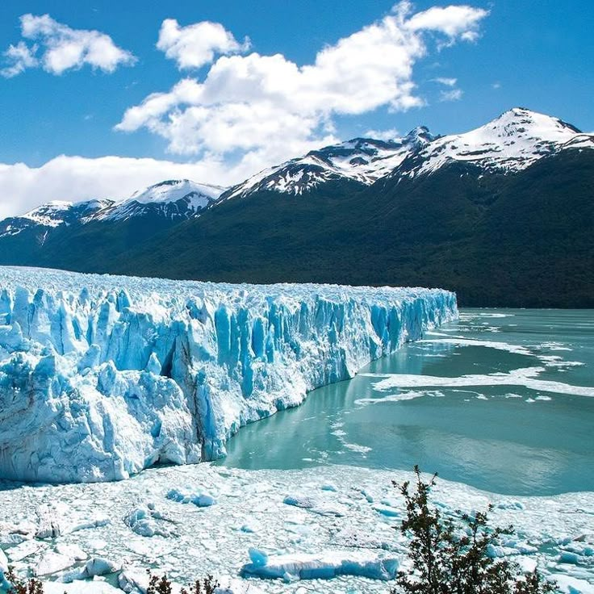

Glaciar Perito Moreno
Provincia de Santa Cruz, Argentina

Información Detallada
El Glaciar Perito Moreno es una de las maravillas naturales más impresionantes del mundo. Ubicado en el Parque Nacional Los Glaciares en Santa Cruz, posee un frente de 5 kilómetros de ancho y paredes de hielo de más de 60 metros de altura sobre el nivel del lago Argentino.
El Fenómeno de Ruptura
A diferencia de la mayoría de los glaciares del mundo, el Perito Moreno se encuentra en equilibrio dinámico. Periódicamente avanza hasta tocar la península de Magallanes, embalsando las aguas del Brazo Rico. Cuando la presión de la masa de agua rompe el dique de hielo, se produce el espectáculo de ruptura más impactante del planeta.
Excursiones y Actividades
Los visitantes pueden disfrutar de pasarelas panorámicas de más de 4 km, navegaciones frente a la pared de hielo e incluso trekkings sobre el glaciar (Minitrekking y Big Ice) usando grampones.